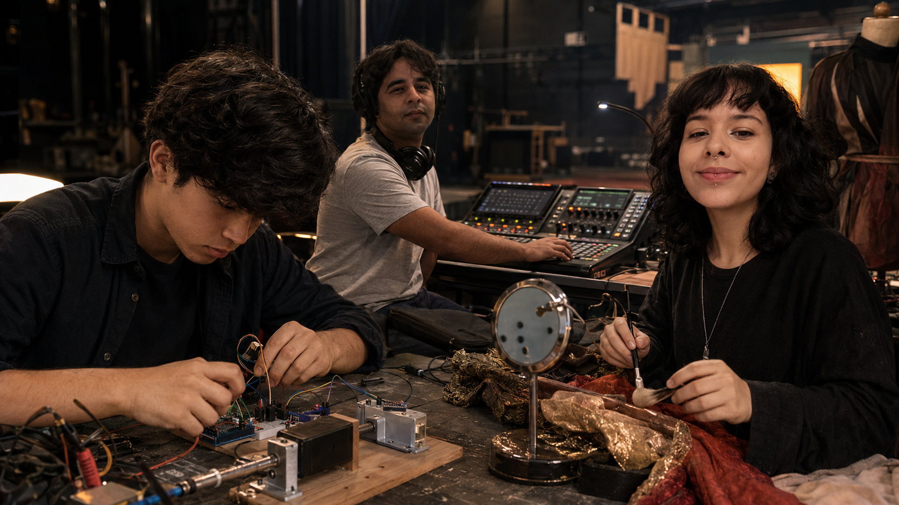
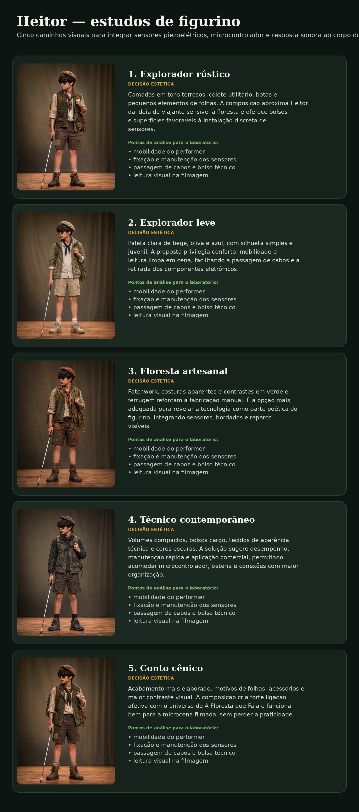

Compreender demandas
Escutar artistas e produtores e traduzir necessidades em requisitos técnicos.

Cooperativa dos Empreendedores de Belo Horizonte · núcleo em formação
Soluções técnicas para artistas, eventos, produções culturais e experiências de marca.
Identidade e missão
O Grupo de Tecnologias do Espetáculo é um núcleo técnico em formação no âmbito da Cooperativa dos Empreendedores de Belo Horizonte, dedicado ao desenvolvimento, teste, documentação e aplicação profissional de tecnologias utilizadas na produção de espetáculos, eventos, ações culturais, cenografias, ambientes, experiências audiovisuais e ações de comunicação.
O grupo atua a partir de necessidades concretas de artistas, produtores, instituições culturais, empresas e projetos comunitários. Seu trabalho consiste em transformar demandas criativas e operacionais em soluções tecnicamente viáveis, seguras, documentadas, reproduzíveis e adequadas à escala de cada produção.
Seu objetivo é desenvolver competências, repertório técnico, procedimentos operacionais, protótipos, métodos de trabalho e capacidade de entrega profissional, gerando trabalho, renda e oportunidades.
Escutar artistas e produtores e traduzir necessidades em requisitos técnicos.
Prototipar, testar, corrigir, documentar e padronizar procedimentos.
Transformar competências e evidências verificáveis em futuras ofertas profissionais.
Posicionamento institucional
Reconhecer e acolher o Grupo de Tecnologias do Espetáculo como núcleo em formação no âmbito da cooperativa, oferecendo ambiente para organização, governança, registro, desenvolvimento de competências e construção de oportunidades profissionais.
Colaborar na interlocução com a FUMEC para avaliar a viabilidade de um programa de atividades laboratoriais no Teatro Professor Ney Soares às terças-feiras, das 14h30 às 16h30, respeitando sua disponibilidade, agenda, normas técnicas e procedimentos administrativos.
A autorização não é presumida. O teatro é apresentado como infraestrutura profissional para ampliar testes e práticas já iniciados pelo grupo, sempre de acordo com sua programação e decisões institucionais.
Projeto demonstrador do ciclo piloto
Desenvolver, testar, documentar e apresentar uma solução de figurino interativo utilizando sensores piezoelétricos e microcontrolador, capaz de gerar efeitos sonoros sincronizados aos gestos do personagem Heitor, dentro do universo de A Floresta que Fala.
Uma microcena filmada no palco do Teatro Professor Ney Soares, utilizando telefone celular, demonstrando a integração entre atuação, figurino, sensores, microcontrolador, resposta sonora, iluminação, operação técnica, registro audiovisual, pós-produção e armazenamento dos arquivos.
A microcena será simultaneamente um exercício formativo, uma prova de conceito, uma peça de portfólio, uma evidência de competência e uma demonstração de potencial comercial.
Valores de resistores, modelo de placa, limiares e resultados serão registrados somente após confirmação experimental.
Figurino sonoro interativo
Decisões estéticas e técnicas para um figurino sonoro interativo
O figurino de Heitor será desenvolvido simultaneamente como elemento visual, estrutura vestível e suporte para a tecnologia interativa.
Os estudos abaixo investigam diferentes relações entre personagem, materialidade, mobilidade, floresta, leitura cênica e organização dos componentes eletrônicos.
As imagens não representam uma decisão final. Elas funcionam como referências para o processo coletivo de experimentação conduzido por figurino, costura, atuação, direção e desenvolvimento eletrônico.

A composição deve contribuir para o reconhecimento de Heitor dentro do universo de A Floresta que Fala, sem reduzir o personagem à sua deficiência visual.
O figurino deve permitir caminhar, utilizar a bengala, movimentar braços e tronco e repetir os gestos previstos para a microcena.
Sensores, fios, conectores, bateria e microcontrolador não podem gerar pontas, calor, pressão excessiva, restrição de movimento ou risco ao performer.
Os piezos devem ser instalados em áreas capazes de captar os gestos escolhidos sem produzir disparos acidentais excessivos.
O figurino deverá prever passagem de cabos, alívio de tensão, pontos de conexão, bolsos técnicos e acesso rápido para manutenção.
Cores, texturas, volumes e detalhes devem permanecer compreensíveis sob a iluminação do palco e na gravação realizada pelo celular.
Os componentes eletrônicos devem poder ser retirados, testados, substituídos e reinstalados de maneira organizada.
A solução deverá considerar materiais disponíveis, tempo de produção, habilidade da equipe, custo e possibilidade de reprodução futura.
A escolha não será feita apenas pela aparência da imagem.
Cada proposta será analisada pela equipe, experimentada com materiais reais e comparada por meio de testes de movimento, iluminação, câmera, conforto e resposta dos sensores.
Túlio contribuirá a partir da experiência corporal e da atuação.
Júlia contribuirá na pesquisa visual, figurino e maquiagem.
A integrante responsável por costura e processos têxteis avaliará materiais, modelagem, acabamento, fixação e manutenção.
Caio Rodrigues avaliará direção, eletrônica, sonorização, iluminação, filmagem e integração técnica.
A solução final poderá combinar elementos de mais de uma proposta.
Discutir identidade, gestos e tecnologia visível ou oculta; selecionar duas ou três direções e registrar decisões provisórias.
Observar materiais e superfícies quanto à resposta dos sensores piezoelétricos.
Definir quantidade de sensores, cabos, entradas e posição do microcontrolador.
Construir protótipos vestíveis, bolsos técnicos, passagens de cabos e fixações removíveis; avaliar conforto e mobilidade.
Avaliar o figurino durante os gestos previstos para a microcena.
Testar a leitura visual sob a iluminação e na filmagem realizada pelo celular.
Usar uma versão consolidada no ensaio técnico.
Registrar a versão final e as alterações realizadas durante o processo.
Instrumento de pesquisa a ser preenchido após os testes práticos.
| Proposta | Identidade visual | Mobilidade | Integração eletrônica | Manutenção | Leitura no vídeo | Viabilidade | Decisão |
|---|---|---|---|---|---|---|---|
| 1 — Explorador rústico | A avaliar | A avaliar | A avaliar | A avaliar | A avaliar | A avaliar | Pendente de teste |
| 2 — Explorador leve | A avaliar | A avaliar | A avaliar | A avaliar | A avaliar | A avaliar | Pendente de teste |
| 3 — Floresta artesanal | A avaliar | A avaliar | A avaliar | A avaliar | A avaliar | A avaliar | Pendente de teste |
| 4 — Técnico contemporâneo | A avaliar | A avaliar | A avaliar | A avaliar | A avaliar | A avaliar | Pendente de teste |
| 5 — Conto cênico | A avaliar | A avaliar | A avaliar | A avaliar | A avaliar | A avaliar | Pendente de teste |
Os estudos visuais foram produzidos como referências preliminares. O figurino definitivo será construído a partir de testes reais, decisões coletivas, materiais disponíveis e avaliação técnica.
Os testes de figurino, sensores, materiais, movimento e filmagem deverão ser registrados segundo o padrão dos Cadernos de Experiência.
Consultar o padrão de documentaçãoCritérios de avaliação
A filmagem não é apenas um registro: ela integra o experimento, permite observar o funcionamento, comparar tomadas, avaliar legibilidade e produzir evidência técnica.
Ciclo piloto
Objetivo: Definir o que o figurino deverá fazer, quais gestos serão captados e como a microcena demonstrará a solução.
Áreas envolvidas: direção, performer, figurino, eletrônica, som e documentação.
Objetivo: Compreender e comparar a resposta dos sensores piezoelétricos.
Áreas envolvidas: eletrônica, experimentação, fotografia e documentação. Nenhum valor ou resultado será presumido.
Objetivo: Ler os sensores com o microcontrolador e transformar impactos em comandos sonoros.
Áreas envolvidas: microcontroladores, programação, som e documentação. O modelo da placa permanece pendente de confirmação.
Objetivo: Integrar sensores, fios e controlador ao figurino sem comprometer movimento, conforto, segurança ou manutenção.
Áreas envolvidas: costura, figurino, performer, eletrônica e segurança.
Objetivo: Transformar o funcionamento técnico em ação cênica clara e repetível.
Áreas envolvidas: direção, performer, som, figurino e documentação.
Objetivo: Planejar imagem, som, iluminação, enquadramento, gravação, pós-produção e armazenamento.
Áreas envolvidas: audiovisual, iluminação, som, direção técnica e armazenamento.
Objetivo: Executar a microcena nas mesmas condições previstas para a gravação final.
Áreas envolvidas: toda a equipe, com coordenação técnica.
Objetivo: Gravar a microcena e consolidar o projeto demonstrador.
Áreas envolvidas: toda a equipe, audiovisual, documentação e avaliação.
Parte do experimento
4K somente com justificativa e capacidade de armazenamento e pós-produção.
Mostrar corpo, gestos, figurino, relação com o espaço e cenografia relevante. Usar plano geral principal, detalhes opcionais e posição de câmera previamente marcada.
Priorizar rosto legível, corpo separado do fundo, figurino e gestos visíveis, sem estouros, sombras impeditivas ou cintilação. Estrutura básica: principal, preenchimento, recorte e ambiente, sem exigir muitos refletores.
Possibilidades: celular, gravação separada ou exportação direta da sessão. Quando possível, preservar ambiente e áudio limpo, usar palma ou claquete e evitar saturação do celular.
Selecionar tomada, sincronizar áudio, cortar início e fim, corrigir levemente exposição, ajustar volume e ruído, incluir título, créditos, projeto e exportar.
A edição não deve ocultar falhas do protótipo. O vídeo deve demonstrar o funcionamento real da solução.
Manter original do celular, cópia de trabalho, projeto de edição, arquivo final e pelo menos uma cópia de segurança adicional.
Nunca editar diretamente o arquivo original.
projetos/
└── figurino_sonoro_heitor/
├── 01_planejamento/
├── 02_circuitos/
├── 03_codigo/
├── 04_sons/
├── 05_figurino/
├── 06_ensaios/
├── 07_gravacao_original/
├── 08_pos_producao/
├── 09_exportacoes/
├── 10_relatorios/
└── 11_pops/Padronização posterior aos testes
Os POPs serão produzidos apenas após testes suficientes e revisão dos participantes. O objetivo é construir trabalho documentado, verificável, padronizado e preparado para processos futuros de certificação.
As evidências poderão incluir relatórios, POPs, checklists, testes, versões, registros, portfólio, atestados futuros, avaliações de clientes e formações ou certificações externas quando aplicáveis.
Desenvolvimento econômico
O ciclo piloto pretende gerar evidências técnicas, repertório e procedimentos capazes de sustentar futuras ofertas profissionais.
Figurinos interativos, roupas sonoras, objetos cênicos sensíveis ao toque, cenografia interativa e performances com sensores.
Experiências de marca, instalações para eventos e integração entre gesto, som, luz e vídeo.
Preparação tecnológica de performers, protótipos para artistas, documentação, operação, manutenção e adaptação para novas produções.
Essas aplicações são possibilidades futuras. Não constituem serviços já prontos, certificados ou disponíveis para contratação.
Responsabilidades principais
As responsabilidades são principais, mas o ciclo utiliza decisões coletivas e colaboração interdisciplinar.
Túlio
Participante dos testes e colaborador em cenografia e experimentação.
Júlia
Figurino, maquiagem e pesquisa visual.
Caio Rodrigues
Direção técnica, direção da microcena, som, iluminação, microcontroladores, documentação e coordenação do processo.
Integrante responsável por costura e processos têxteis
Costura, acabamento, integração de componentes ao figurino, manutenção e orientação de processos têxteis.
Integração com o sistema
Cada encontro deverá produzir registros técnicos capazes de alimentar artigos, relatórios, checklists e procedimentos operacionais do Grupo de Tecnologias do Espetáculo.
Consultar o padrão de documentaçãoART-2026-001 · versão 01
Artigo técnico disponível em formato PDF.
Abrir artigo em PDFART-2026-002 · versão 01
Artigo técnico disponível em formato PDF.
Abrir artigo em PDFART-2026-003 · versão 01
Artigo técnico disponível em formato PDF.
Abrir artigo em PDF